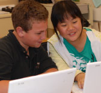

How We Helps
Terman Middle School

"We are very grateful to our PiE donors who clearly care about our young people and their
middle school experience. PiE makes it possible for us to maintain our elective courses, and to
continue to offer counseling services and activities that address the socio-emotional needs
specific to middle schoolers, and ultimately improve their connectedness to school."
– Katherine Baker, Terman Principal
Thanks to parent and community support for Partners in Education, Terman will receive more than
$180,000 to support its students for the 2012-13 school year. These funds are used as follows:
-
Student Support — Spending on additional counselor
time
to maintain one counselor per grade level. This allows Terman counselors to move with the
students from 6th through 8th grade, providing continuity and a deeper connection with
individual students. Counselors also have the time to meet weekly with teacher teams to
check
in with teachers about students and help maintain student wellness and connections. PiE
funds
also help pay for Tiger Camp, Terman’s popular 6th grade orientation program
-
Additional Electives — Spending to support staffing
for electives, including music (choir),
public speaking/drama, and creative writing to allow Terman to offer a broad range of
electives
even though it is smaller than other PAUSD middle schools. An array of electives can help
young
people find their areas of interest and passion, fostering confidence, enthusiasm, and
success
in school. PiE dollars also help fund Terman’s popular Homework Habitat program to give
young
students the opportunity to work on homework in a safe and structured environment at school
-
Teacher Support and Mentoring — PiE dollars are
helping deepen teaching at each grade level.
With the help of WestEd, Terman teachers are meeting to improve and systematize the teaching
of
writing and reading at all grade levels. PiE funds also help pay for Terman’s technology
teacher
who helps ensure that technology is well-utilized in all Terman classrooms
Your 2012-13 PiE Chairs are Stacey Ashlund, Bin He, Kelly Mahoney and Susan Gray. Questions
about PiE? Please email them at terman AT SIGN pausd.org
back